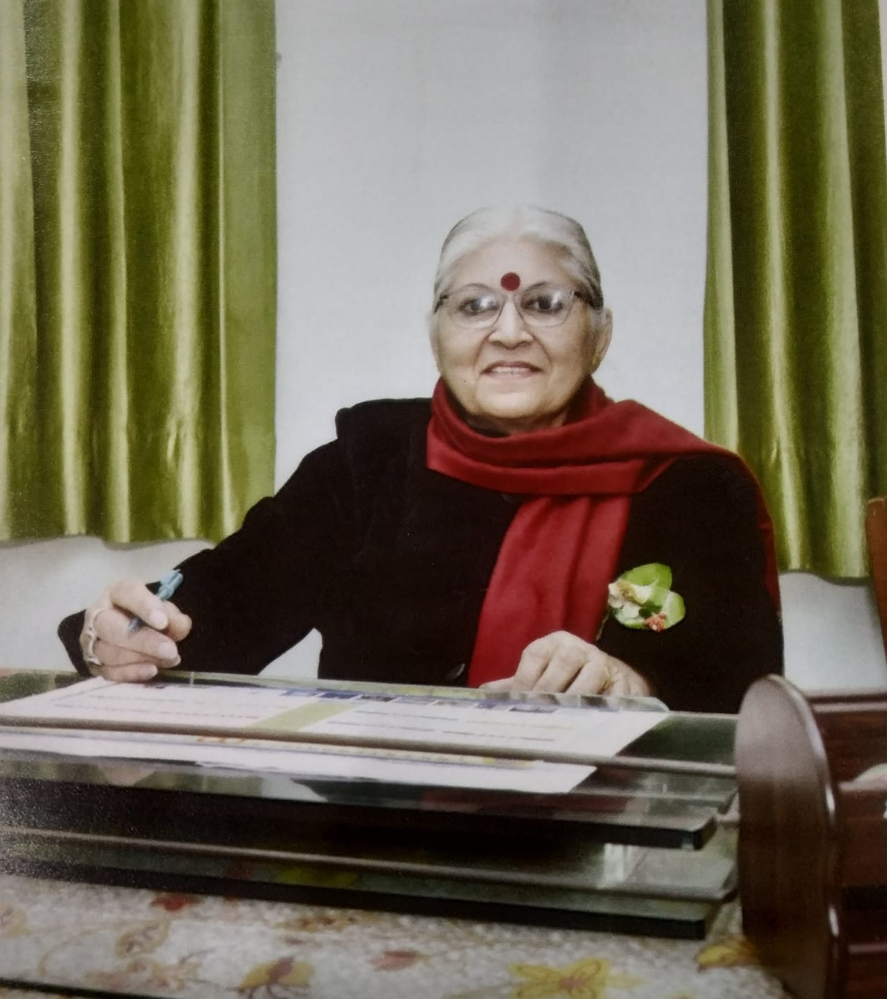
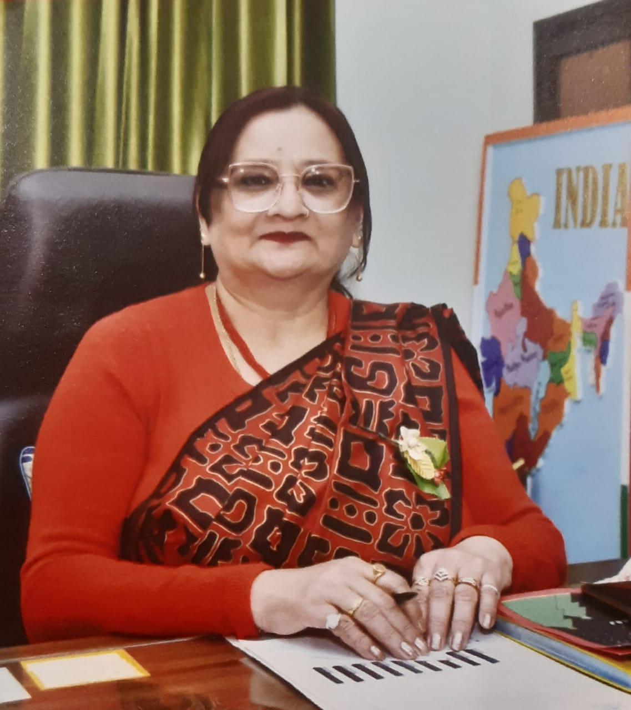

St. Mary's Academy, Meerut is a co-educational School establlished in 1952. Excellent results,
sound and moral values, keen interest in sports, extra curricular activities
and all round personality have been the Hall mark of St. Mary's Academy Meerut. The
school is rated best in Meerut and Uttar Pradesh. It has been awarded the best school in Meerut
Here Are Our Co-Ordinators
Mr. Sayed B Karim
Ms. S. Uppal

Mrs. Winnie Joseph

Our Vision
We aim to be a sound, sensible and sensitive school community, imbibing and sharing common values and morals for the creation of a genuine human
being. We believe , a well-balanced human being needs to be knowledgeable, dignified, independent, caring, trustworthy, and in possession of a positive
attitude to life. We belive, a good teacher is a friend, philosopher, guide and above all, one who walks his/her talk.
A good citizen is an asset to the nation and to the society, with true patriotic feelings and concern for his/her contrymen.
Recognizing the enormous responsibility and expectation, we earnestly endevour to inculcate in every 'Marian', besides academic excellence, sensitivity
towards others, respect, patriotism, appreciation of the dignity of labour, orientation for service, concern for environment and above all softness towards the
under previleged.
Contact Us
You Can Contact Our School Offline At Cariappa Street Meerut Cantt U.P. India
You can meet The Principal between 9am and 10am On Working Days With A Prior Notice
OR
You can Visit Can Contact us Online on +91 (1524) 1254826633518 or E-mail us on st.marys@gmail.com